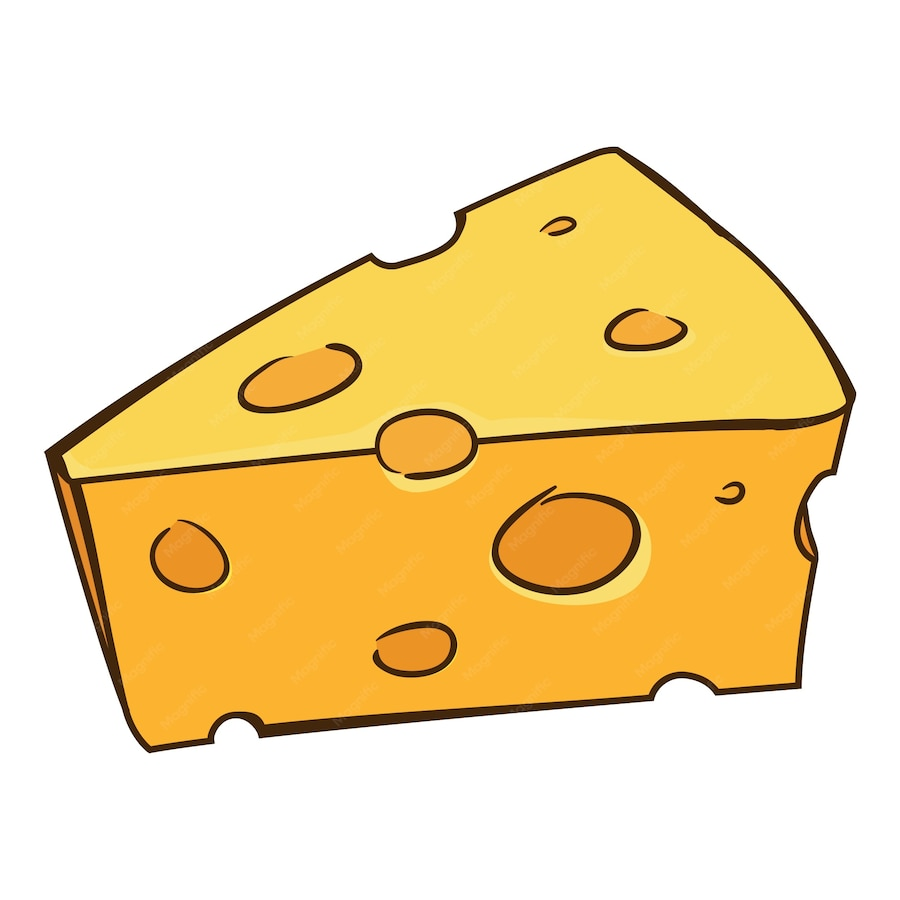

Yani Jongen is een 19-jarige modeontwerper uit Tilburg.
Ze studeert momenteel mode in haar 2e jaar aan de hogeschool van Utrecht voor de kunsten. In een wereld van clichés en stereotypen, onderzoekt ze door middel van humor en absurditeit vraagstukken over identiteit. Ze maakt georganiseerde warboelen die als doel hebben je te laten lachen. Haar ontwerpstijl wordt gekenmerkt door humor, kleur, opvallende prints en overdreven/vergroote vormen.
Deze modecollectie bestaat uit vijf ontwerpen waarmee Yani je meeneemt in haar leven als het ‘vreemde eendje’. De collectie gaat over opgroeien in een klein Brabants dorp, terwijl je tegelijkertijd op zoek bent naar wie je echt bent. Het werk praat over de meningen en verwachtingen die anderen over haar hebben en vormt tegelijkertijd een tegenreactie daarop. Het is een ode aan het anders zijn, met als boodschap: “Laat mij het rare eendje maar gewoon zijn.”
ZEG HOI
MAIL ME ↗
VIND MIJ